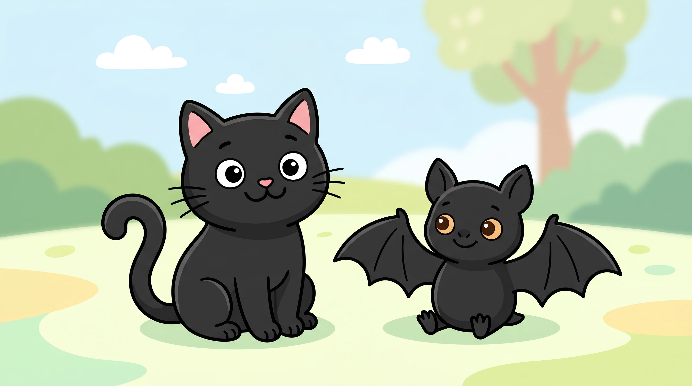
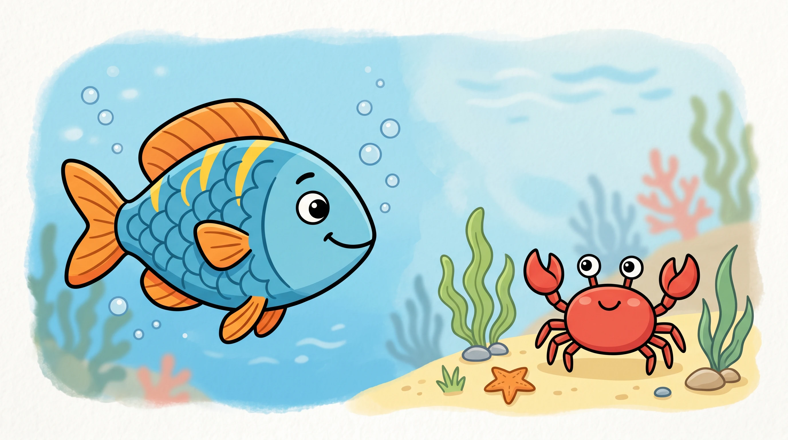
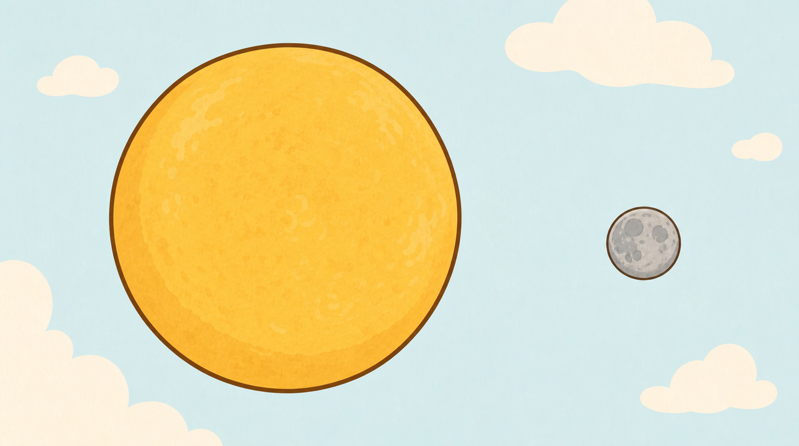
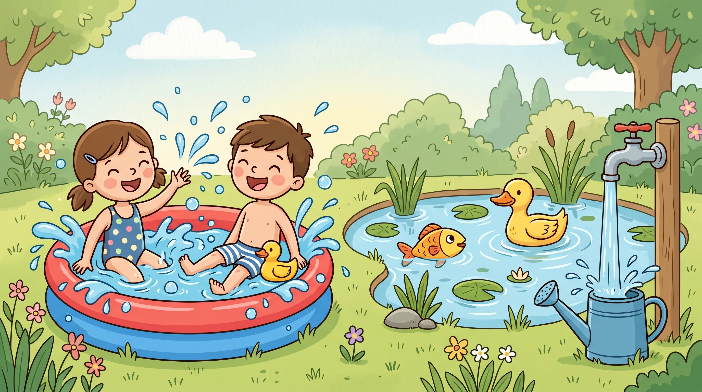
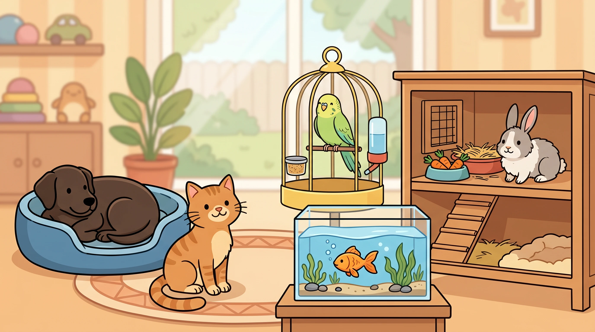
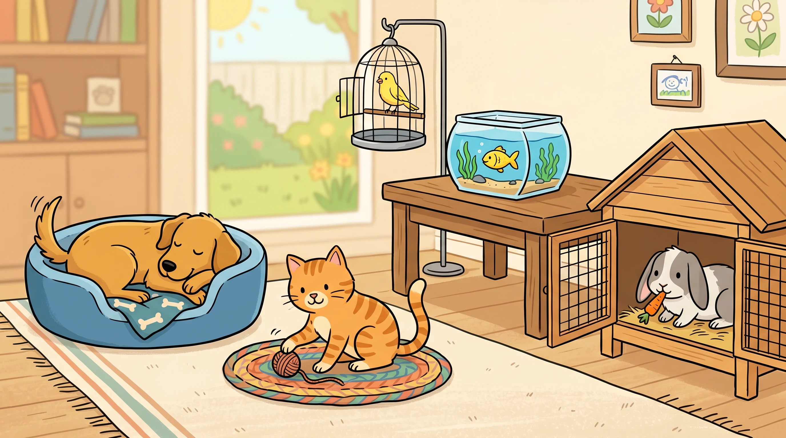
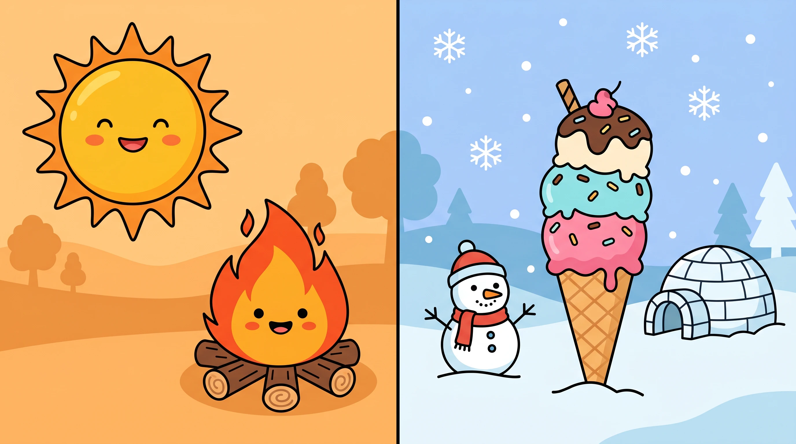

Human visual review only. Automated checks cannot reliably catch anatomy slop.

/guided-reading/nonfiction/first-facts-level-a/book-01/page-005.webp/guided-reading/nonfiction/first-facts-level-a/book-01/page-006.webp/guided-reading/nonfiction/first-facts-level-a/book-01/page-007.webp/guided-reading/nonfiction/first-facts-level-a/book-01/source-title.webp/guided-reading/nonfiction/first-facts-level-a/book-02/cover.webp/guided-reading/nonfiction/first-facts-level-a/book-02/page-001.webp/guided-reading/nonfiction/first-facts-level-a/book-02/page-002.webp/guided-reading/nonfiction/first-facts-level-a/book-02/page-003.webp/guided-reading/nonfiction/first-facts-level-a/book-02/page-004.webp/guided-reading/nonfiction/first-facts-level-a/book-02/page-005.webp/guided-reading/nonfiction/first-facts-level-a/book-02/page-006.webp/guided-reading/nonfiction/first-facts-level-a/book-02/page-007.webp/guided-reading/nonfiction/first-facts-level-a/book-02/source-title.webp/guided-reading/nonfiction/first-facts-level-a/book-03/cover.webp/guided-reading/nonfiction/first-facts-level-a/book-03/page-001.webp
/guided-reading/nonfiction/first-facts-level-a/book-03/page-002.webp/guided-reading/nonfiction/first-facts-level-a/book-03/page-003.webp/guided-reading/nonfiction/first-facts-level-a/book-03/page-004.webp
/guided-reading/nonfiction/first-facts-level-a/book-03/page-005.webp/guided-reading/nonfiction/first-facts-level-a/book-03/page-006.webp/guided-reading/nonfiction/first-facts-level-a/book-03/page-007.webp/guided-reading/nonfiction/first-facts-level-a/book-03/source-title.webp/guided-reading/nonfiction/first-facts-level-a/book-04/cover.webp/guided-reading/nonfiction/first-facts-level-a/book-04/page-001.webp/guided-reading/nonfiction/first-facts-level-a/book-04/page-002.webp/guided-reading/nonfiction/first-facts-level-a/book-04/page-003.webp/guided-reading/nonfiction/first-facts-level-a/book-04/page-004.webp/guided-reading/nonfiction/first-facts-level-a/book-04/page-005.webp/guided-reading/nonfiction/first-facts-level-a/book-04/page-006.webp/guided-reading/nonfiction/first-facts-level-a/book-04/page-007.webp
/guided-reading/nonfiction/first-facts-level-a/book-04/source-title.webp/guided-reading/nonfiction/first-facts-level-a/book-05/cover.webp/guided-reading/nonfiction/first-facts-level-a/book-05/page-001.webp/guided-reading/nonfiction/first-facts-level-a/book-05/page-002.webp/guided-reading/nonfiction/first-facts-level-a/book-05/page-003.webp/guided-reading/nonfiction/first-facts-level-a/book-05/page-004.webp/guided-reading/nonfiction/first-facts-level-a/book-05/page-005.webp/guided-reading/nonfiction/first-facts-level-a/book-05/page-006.webp/guided-reading/nonfiction/first-facts-level-a/book-05/page-007.webp/guided-reading/nonfiction/first-facts-level-a/book-05/source-title.webp/guided-reading/nonfiction/first-facts-level-a/book-06/cover.webp/guided-reading/nonfiction/first-facts-level-a/book-06/page-001.webp/guided-reading/nonfiction/first-facts-level-a/book-06/page-002.webp/guided-reading/nonfiction/first-facts-level-a/book-06/page-003.webp/guided-reading/nonfiction/first-facts-level-a/book-06/page-004.webp/guided-reading/nonfiction/first-facts-level-a/book-06/page-005.webp/guided-reading/nonfiction/first-facts-level-a/book-06/page-006.webp/guided-reading/nonfiction/first-facts-level-a/book-06/page-007.webp/guided-reading/nonfiction/first-facts-level-a/book-06/source-title.webp/guided-reading/nonfiction/first-facts-level-a/book-07/cover.webp/guided-reading/nonfiction/first-facts-level-a/book-07/page-001.webp/guided-reading/nonfiction/first-facts-level-a/book-07/page-002.webp/guided-reading/nonfiction/first-facts-level-a/book-07/page-003.webp/guided-reading/nonfiction/first-facts-level-a/book-07/page-004.webp/guided-reading/nonfiction/first-facts-level-a/book-07/page-005.webp/guided-reading/nonfiction/first-facts-level-a/book-07/page-006.webp/guided-reading/nonfiction/first-facts-level-a/book-07/page-007.webp/guided-reading/nonfiction/first-facts-level-a/book-07/source-title.webp
/guided-reading/nonfiction/first-facts-level-a/book-08/cover.webp/guided-reading/nonfiction/first-facts-level-a/book-08/page-001.webp/guided-reading/nonfiction/first-facts-level-a/book-08/page-002.webp/guided-reading/nonfiction/first-facts-level-a/book-08/page-003.webp/guided-reading/nonfiction/first-facts-level-a/book-08/page-004.webp/guided-reading/nonfiction/first-facts-level-a/book-08/page-005.webp/guided-reading/nonfiction/first-facts-level-a/book-08/page-006.webp/guided-reading/nonfiction/first-facts-level-a/book-08/page-007.webp
/guided-reading/nonfiction/first-facts-level-a/book-08/source-title.webp/guided-reading/nonfiction/first-facts-level-a/book-09/cover.webp/guided-reading/nonfiction/first-facts-level-a/book-09/page-001.webp/guided-reading/nonfiction/first-facts-level-a/book-09/page-002.webp/guided-reading/nonfiction/first-facts-level-a/book-09/page-003.webp/guided-reading/nonfiction/first-facts-level-a/book-09/page-004.webp/guided-reading/nonfiction/first-facts-level-a/book-09/page-005.webp/guided-reading/nonfiction/first-facts-level-a/book-09/page-006.webp/guided-reading/nonfiction/first-facts-level-a/book-09/page-007.webp
/guided-reading/nonfiction/first-facts-level-a/book-09/source-title.webp/guided-reading/nonfiction/first-facts-level-a/book-10/cover.webp/guided-reading/nonfiction/first-facts-level-a/book-10/page-001.webp/guided-reading/nonfiction/first-facts-level-a/book-10/page-002.webp/guided-reading/nonfiction/first-facts-level-a/book-10/page-003.webp